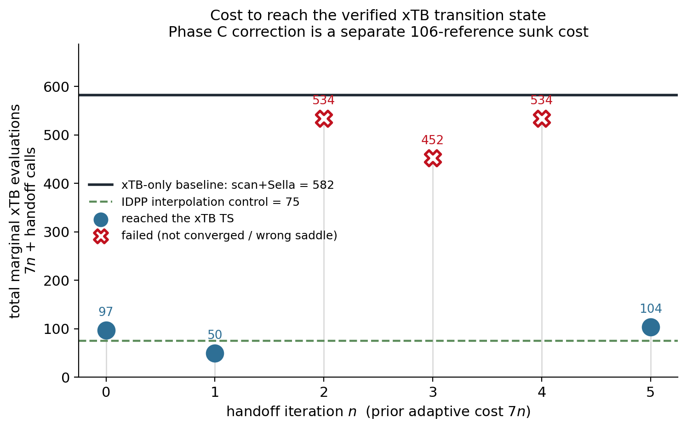
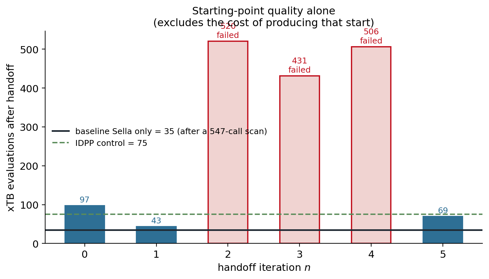
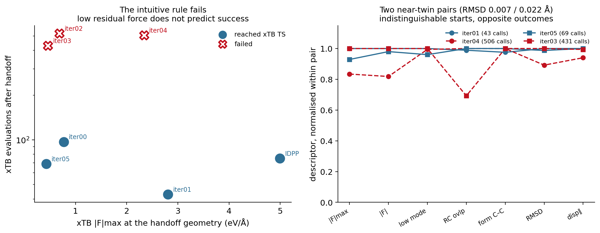

Study 09 — Reference handoff: cost and diagnostics
Can a corrected-MACE saddle hand off to the xTB saddle search more cheaply than the reference alone — and can we tell in advance when it will work?
Scientific question Given the Phase C corrected model and the iterative loop of Pillar 4, does handing a corrected-model saddle to Sella on the GFN2-xTB surface reduce the reference cost of reaching the verified xTB transition state — and is there an observable that says when to hand off?
Two linked experiments (Aug 21), both negative. Full write-ups: handoff benchmark · handoff diagnostics. All numbers below are read from sweep/corrections/aug21_handoff/results.json and sweep/corrections/aug21_diagnostics/*.json.
Method
- Same settings for every case: Sella, Cartesian coordinates,
order = 1,fmax = 1e−4eV/Å, 500 steps, on GFN2-xTB (electronic temperature 1000 K, 500 SCF iterations), run with sella 2.5.0 — the version used in Phase 2. - Cost metric: genuine
Calculator.calculate()calls counted inside the xTB calculator (one call = one SCF giving energy and forces). Sella’snstepsundercounts by 1.0–2.0× in these runs and is kept only as a cross-check. - Accounting: candidate n has a prior adaptive cost of 7n reference calls from the loop. The 106 Phase C training references are a separate sunk cost. Hessian certification (96 calls per case) is excluded from every case alike.
- Baseline: the xTB-only route — a sequential relaxed scan from the reactant, then Sella from the scan maximum.
- Control: an IDPP-interpolated guess, which costs no reference calls to produce.
Benchmark — cost to reach the xTB TS
| case | start | prior refs | handoff calls | total | reached TS | forming C–C | barrier |
|---|---|---|---|---|---|---|---|
| baseline scan + Sella | xTB scan maximum | 547 (scan) | 35 | 582 | yes | 2.3153 Å | 6.71 |
| iter00 | corrected-MACE saddle | 0 | 97 | 97 | yes | 2.3153 Å | 6.71 |
| iter01 | corrected-MACE saddle | 7 | 43 | 50 | yes | 2.3153 Å | 6.71 |
| iter02 | corrected-MACE saddle | 14 | 520 | 534 | no | 2.3153 Å | 6.71 |
| iter03 | scan-max fallback | 21 | 431 | 452 | no | 3.7378 Å | −0.20 |
| iter04 | corrected-MACE saddle | 28 | 506 | 534 | no | 2.3153 Å | 6.71 |
| iter05 | scan-max fallback | 35 | 69 | 104 | yes | 2.3153 Å | 6.71 |
| IDPP control | interpolation | 0 | 75 | 75 | yes | 2.3153 Å | 6.71 |


Key result — negative Only 3 of 6 handoffs reached the TS, with no trend in iteration number (successful totals 97, 50, 104 at n = 0, 1, 5; failures at n = 2, 3, 4). The baseline’s cost is dominated by its scan (547 of 582 calls), and a zero-cost IDPP guess reaches the same TS in 75 calls. Measured against that cheapest working alternative, only one handoff (iteration 1, 50 calls) is cheaper, and nothing identified it in advance.
What “failed” means here Iterations 2 and 4 reach the right structure — forming C–C 2.3153 Å, 0.0016 Å RMSD from the xTB TS, 6.71 kcal/mol — but never tighten below the pre-registered fmax = 1e−4 within 500 steps (they reach 1e−3 in 45 and 54 steps, like the successes). Iteration 3 is the only genuine wrong-basin failure: it converges to a reactant-basin stationary point (forming C–C 3.74 Å, −0.20 kcal/mol, reaction-mode overlap 5e−5). The threshold was not loosened after the fact; this is reported as threshold sensitivity, not a redefinition of the result.
Every successful run lands on the same structure: forming C–C 2.3153 Å, 6.71 kcal/mol, principal imaginary mode −393.4 cm⁻¹ — the verified xTB TS (2.315 Å, 6.7 kcal/mol, −394 cm⁻¹).
Diagnostics — is there a handoff signal?
The follow-up (777 further xTB evaluations) measured reproducibility, 14 descriptors of every starting geometry, and near-identical starting points.
Reproducibility
| case | calls in 3 replicates | outcome |
|---|---|---|
| iter01 | 44, 44, 44 | reached the TS in all three |
| iter02 | 519, 519, 519 | did not converge in all three |
| iter03 | 2079, 1351, 1934 | failed in all three, by different routes |
The qualitative outcome reproduces. iter03 dissociates the complex in every replicate (final forming C–C 4.03 / 4.92 / 5.21 Å) but along a different path each time: on a flat, dissociative surface, bit-level differences in xTB’s threaded SCF are amplified. Its cost should be read as “large and unstable”, not as one number.
Near-twin starting geometries
| pair | Kabsch RMSD between them | median descriptor difference | outcomes | cost ratio |
|---|---|---|---|---|
| iter01 vs iter04 | 0.0217 Å | 9.5% | 43 calls (reached) vs 506 (failed) | 11.8× |
| iter05 vs iter03 | 0.0068 Å | 2.5% | 69 calls (reached) vs 431 (failed) | 6.2× |

Key result — negative No tested pre-handoff descriptor predicts success. Starting geometries 0.007 Å apart, with descriptors matching to 2.5%, have opposite outcomes. The intuitive rule is wrong: the IDPP start has the largest xTB residual force (4.99 eV/Å) and succeeds; iter03 (0.46) and iter02 (0.69) have small residual forces and fail.
- Demonstrated Within these seven cases, no single starting-state descriptor separates success from failure, and two near-twin pairs diverge.
- Interpretation At the resolution that separates real candidates, the outcome does not behave as a smooth function of the starting state, so a pre-handoff criterion may be the wrong shape of solution.
- Open question A run-time guard — abort if the forming C–C leaves 1.5–3.0 Å, or if fmax has not reached 1e−3 within ~60 steps — would have caught every expensive case here, but has not been tested prospectively. Testing any pre-handoff rule would need on the order of 20–30 candidates, ideally from more than one reaction.
Caveats
- One reaction, one system, one correction family.
- The 547-call scan cost depends on the sequential relaxed-scan protocol chosen.
- Strict Hessian certification is unreliable on the xTB surface here. Identical structures (same forming distance, barrier, and −393.4 cm⁻¹ principal mode) intermittently show 1–3 imaginary modes because soft reactant-side van der Waals modes sit near the 50 cm⁻¹ cutoff. The benchmark therefore reports reached the reference saddle (structure and principal-mode identity) separately from strict Hessian cleanliness.
- This is not active learning: the loop used a fixed, hand-specified query rule with no acquisition function or uncertainty estimate.
- A prediction made before the experiment — that the IDPP control would fail — was wrong.